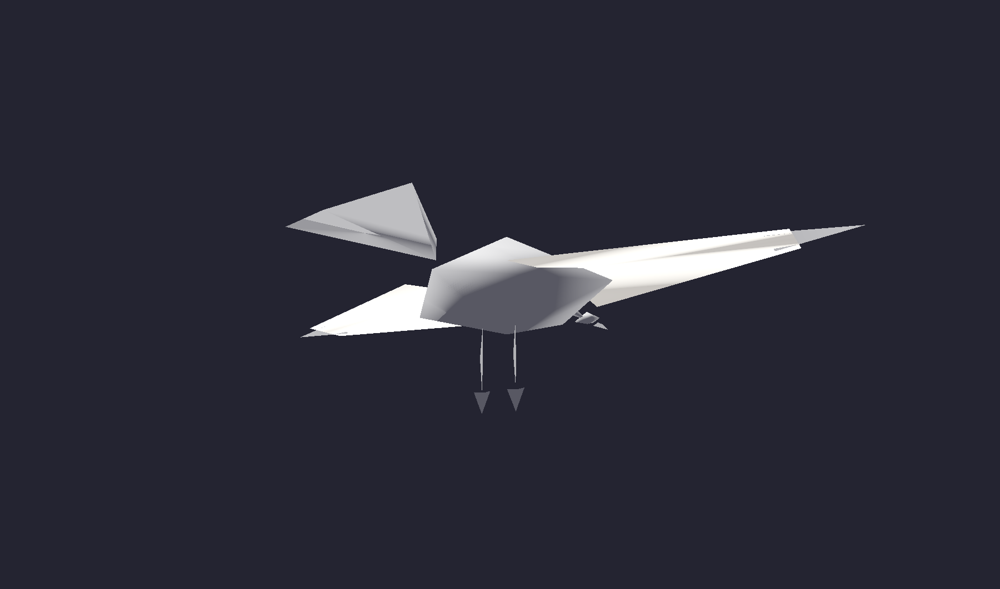
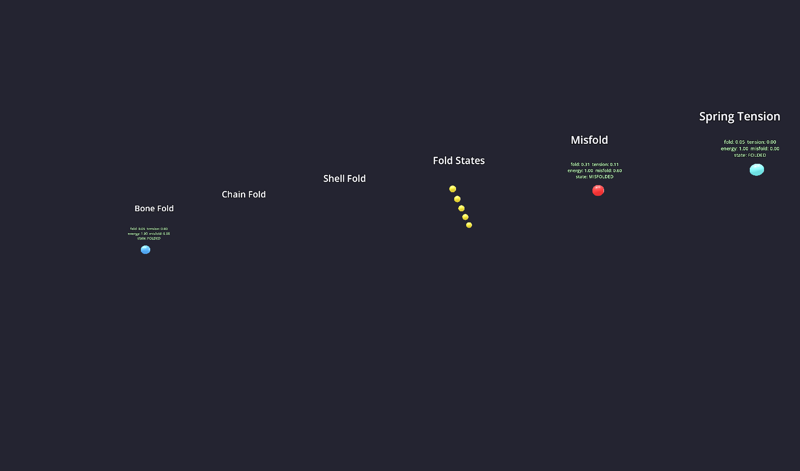

April 3, 2026
Folding is not a visual motif. It is a universal transformation principle. One variable — fold_amount, ranging from 0.0 to 1.0 — drives an entire creature lifecycle: egg, hatch, stand, walk, fly. The body doesn't switch between states. It folds through them.
Folding was already hiding in Ada Research. We just hadn't named it.
The project has 16 creatures with personality arcs that move from FOE to WARY to NEUTRAL to CURIOUS to FRIEND across four sequences. That progression is a fold. Catalyst absorption — a crystal transforming into a hand tool as the player interacts with it — is a fold. The Fractal Database, built on the principle that the same tree structure appears at different scales, was described internally as "same tree, different folds." And MiuraCrawler, one of the earliest creature prototypes, already had a fold_amount property driving its geometry.
The pattern was there. What was missing was a system that treated folding as a first-class operation applicable to any creature body.
The system separates creature state into three orthogonal axes:
| Axis | Controls | Example values |
|---|---|---|
| affect | Emotional state | FOE, WARY, NEUTRAL, CURIOUS, FRIEND |
| fold_state | Physical body shape | 0.0 (egg) → 1.0 (full flight) |
| activity | Current behavior | idle, walk, sleep, flee, approach |
These axes are independent. A creature can be curious while folded into an egg. It can be hostile while flying. It can sleep at any fold state. This prevents the combinatorial explosion that happens when emotional state, body shape, and behavior are tangled into a single state machine.
The folding system is not one algorithm. It is twelve, layered on top of each other:
| Layer | Algorithm | Role |
|---|---|---|
| 1 | Finite State Machine | State control and transition gating |
| 2 | Spring-damped interpolation | Smooth motion between target values |
| 3 | Hierarchical fold tree | Cascading transforms from root to leaf |
| 4 | BoneFoldSolver | Wings and limbs — hinge rotation around a joint |
| 5 | ChainFoldSolver | Accordion and telescoping — segments compress along a spine |
| 6 | ShellFoldSolver | Nested layers — concentric shells that open outward |
| 7 | Fold constraints | Min/max angles, thickness limits, collision avoidance |
| 8 | Inverse kinematics | Feet on ground, head tracking target |
| 9 | Misfold corruption | When folds violate constraints, visible structural errors |
| 10 | Energy gating | Low energy limits maximum fold extent |
| 11 | Parent gating | Child segments wait for parent to reach threshold |
| 12 | Spring convergence | Damping factor ensures fold settles, doesn't oscillate forever |
Each layer can be tested independently. Layer 4 doesn't care about layer 10. But at runtime they all compose: the FSM decides the target fold, the spring interpolates toward it, the tree cascades through segments, the solver computes geometry, constraints clamp illegal values, and energy gating limits how far the fold can actually go.
The formal runtime container for a folding creature has four parts:
The FoldRig is where geometry lives. It owns the array of segments, knows which solver handles each group, holds the current fold pose, and runs the spring interpolation every frame. A creature without a FoldRig is just data. The FoldRig makes it move.
Each segment in the fold tree knows its physical dimensions: size, thickness, and pivot_offset. This is not decoration. The solvers need it.
The chain solver compresses segments along a spine. But it can't compress past the total stacked thickness of all segments in the chain. If you have 5 segments each 0.1 units thick, the chain bottoms out at 0.5 units — it can't go to zero. The shell solver opens concentric layers outward, but inner layers can't clip through outer ones. Geometry fits in the fold because the fold knows the geometry.
min_compressed_length = sum(segment.thickness for segment in chain). This is not a tuning parameter. It falls out of the physics. A stack of plates can't compress shorter than the stack.
The first full creature built on the system: a 13-segment origami bird that moves through five locomotion modes, all driven by a single fold_amount value.

The origami bird at five fold states. Same body, same rig, one variable.
## fold_amount to bird_mode mapping
func _get_bird_mode(fold: float) -> int:
if fold < 0.10:
return BirdMode.EGG_SEED # paper shell, gentle sway
elif fold < 0.35:
return BirdMode.HATCHING # shell cracks, body emerges
elif fold < 0.55:
return BirdMode.STANDING_CRANE # legs extended, head bobs
elif fold < 0.75:
return BirdMode.WALKING # alternating gait, wings half-spread
else:
return BirdMode.FLYING # full wingspan, flap cycle, lift-off
| fold_amount | Mode | What you see |
|---|---|---|
| 0.00 – 0.10 | Egg Seed | Paper shell, gentle sway side to side |
| 0.10 – 0.35 | Hatching | Shell panels crack apart, body pushes through |
| 0.35 – 0.55 | Standing Crane | Legs extend downward, head bobs on spring |
| 0.55 – 0.75 | Walking | Alternating gait, wings half-spread for balance |
| 0.75 – 1.00 | Flying | Full wingspan, flap cycle engages, feet leave ground |
The transitions are not crossfades. At fold 0.35, the shell segments have rotated past their cracking threshold and the leg segments have extended past their standing threshold. The bird doesn't "switch to standing mode" — it arrives there because the fold has progressed far enough that standing is what the body does.
A test map with six zones, each demonstrating a different aspect of the system:

The folding zoo. Six zones, six angles on the same system.
| Zone | Contents |
|---|---|
| Bone Fold | Creatures using BoneFoldSolver — hinged wings, jointed limbs |
| Chain Fold | Accordion creatures, telescoping bodies, caterpillar segments |
| Shell Fold | Nested shell creatures that open like matryoshka dolls |
| State Parade | Five identical creatures frozen at fold 0.0, 0.25, 0.50, 0.75, 1.0 |
| Misfold | Creatures with deliberate constraint violations — visible structural errors |
| Spring Tension | Creatures with different damping values, from snappy to sluggish |
Debug overlays in the zoo show live values: fold_amount, spring tension, energy level, misfold severity. Each creature is a running experiment.
The test suite covers the full stack without needing VR or a display:
## Test categories (28 total) Resource loading 4 tests DNA, BodyGraph, FoldRig, BehaviorProfile Solver correctness 6 tests Bone, Chain, Shell — 2 each Parent gating 3 tests Child waits, child proceeds, deep chain Constraints 3 tests Min angle, max angle, thickness floor Spring convergence 3 tests Overdamped, underdamped, critically damped Energy gating 2 tests Low energy caps fold, energy restore unfolds FSM transitions 4 tests Valid transition, invalid blocked, affect change, activity change VR verbs 2 tests Compress maps to fold, smooth heals misfold Integration 1 test Full creature lifecycle egg → fly → egg
All 28 run headless via --script. No GPU, no window, no VR headset. The integration test drives fold_amount from 0 to 1 and back, checking that every mode transition fires correctly and that the creature returns to its original state.
Five hand interactions that replace combat verbs with care verbs:
| Verb | Gesture | Effect |
|---|---|---|
| Compress | Squeeze (grip close) | Decreases fold_amount — creature folds inward |
| Fan open | Pull apart (two-hand spread) | Increases fold_amount — creature unfolds |
| Tuck | Push inward (palm press) | Folds a specific segment group, not the whole body |
| Smooth | Stroke (palm slide along surface) | Heals misfold corruption on touched segments |
| Feed | Offer catalyst (open palm near mouth) | Restores energy, allowing further unfolding |
Compress and fan operate on the global fold_amount. Tuck targets a segment group — you can fold the wings without folding the legs. Smooth requires physical contact with the damaged segments. Feed requires a catalyst in hand, connecting the fold system to the existing catalyst/transmutation economy.
The system works in isolation. The next steps connect it to everything else:
Wire to existing ecosystem. The 16 creatures already in Ada Research need FoldRigs. Their personality arcs (FOE → FRIEND) become fold progressions. A creature at FOE starts folded tight. As it warms to the player over four sequences, it unfolds.
More species. The origami bird is species one. The solver architecture supports any body plan — chain creatures (caterpillars, worms), shell creatures (snails, armadillos), bone creatures (anything with limbs). Each species is a CritterDNA file and a BodyGraph.
Transmutation bonds. Fold state should feed into the transmutation bond system. Two creatures at the same fold_amount could form a resonance bond. A fully unfolded creature could catalyze an unfolding in a nearby folded one.
fold_amount is not a parameter. It is the creature's entire physical identity at a given moment. Everything else — shape, posture, locomotion, capability — derives from it.
...
14 files. 3 solvers. 13 segments. 28 tests. 5 VR verbs. One variable.